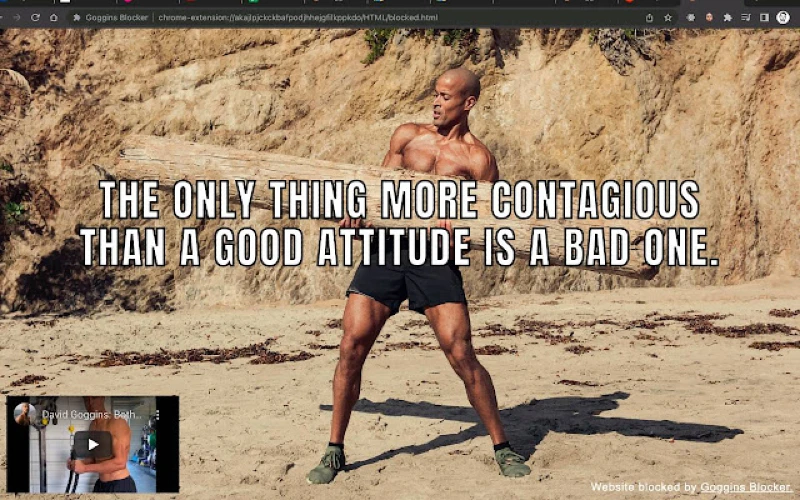

Goggins Blocker is a Chrome extension that allows you to block unproductive or undesirable websites and receive motivation from David Goggins in the process. 
Goggins Blocker was created as a project to learn about coding a Chrome extension whilst also building a simple product that would help stop the constant distractions that interrupted the development process.
I wanted a simple way to be able to quickly block and unblock websites that were counter-productive to whatever I was currently learning or working on, whilst also not not needing to sign in or have my data stolen/sold.
Once installed, users are able to block a website directly whilst browsing using the extension shortcut or can manually add or remove them from their own Goggins Blocker dashboard. All data is stored locally on Chrome and requires no login nor is any data sent or received by first or third parties.